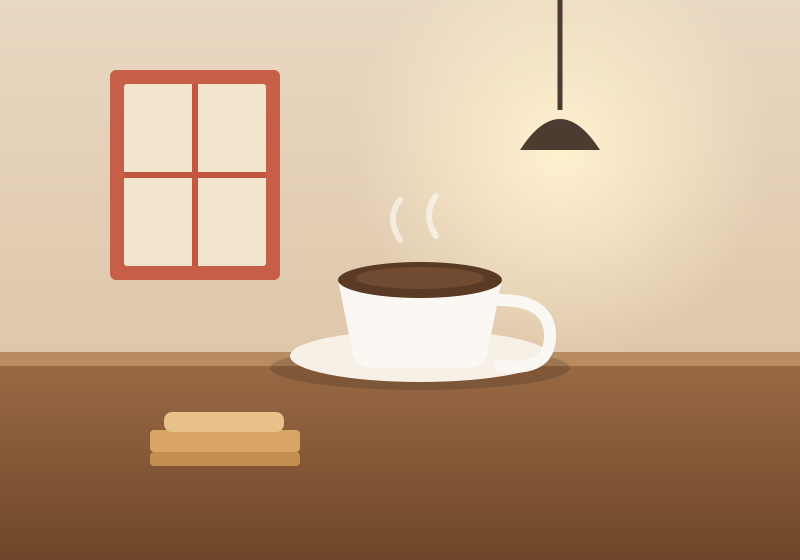

<!doctype html>
<html lang="zh-Hant-TW">
<head>
<meta charset="utf-8">
<!-- stamp-screens:start --><script type="importmap">{"imports":{"/screens/autoplay.js":"/screens/autoplay.js?v=1272523877","/screens/chrome.js":"/screens/chrome.js?v=db01bc3efc","/screens/demo-state.js":"/screens/demo-state.js?v=9a9fea154c","/screens/inspiration-chain.js":"/screens/inspiration-chain.js?v=6d5d165659","/screens/inspiration-data.js":"/screens/inspiration-data.js?v=b870cb0027","/screens/inspiration-strings.js":"/screens/inspiration-strings.js?v=bab5354872","/screens/map-live.js":"/screens/map-live.js?v=b97ef8d7da","/screens/map-static.js":"/screens/map-static.js?v=53639b3fa6","/screens/map.js":"/screens/map.js?v=869d04c645","/screens/pending-state.js":"/screens/pending-state.js?v=4a8a79f431","/screens/share-ext.js":"/screens/share-ext.js?v=ed2a74f4e4","/screens/stories-demo-library.js":"/screens/stories-demo-library.js?v=c9f72ab98c","/screens/stories-demo-map.js":"/screens/stories-demo-map.js?v=17db08d328","/screens/stories-demo-paywall.js":"/screens/stories-demo-paywall.js?v=58fbe0ec90","/screens/stories-demo-plan.js":"/screens/stories-demo-plan.js?v=5291740d88","/screens/stories-map.js":"/screens/stories-map.js?v=4532c86530","/screens/stories-plan.js":"/screens/stories-plan.js?v=5276fe4b75","/screens/stories-tools.js":"/screens/stories-tools.js?v=7c18baa77a","/screens/stories.js":"/screens/stories.js?v=9712cb2d48","/screens/tools.js":"/screens/tools.js?v=713ad53506","/screens/zoom.js":"/screens/zoom.js?v=02ec7a2682","/trip/app.js":"/trip/app.js?v=88863cd89f","/trip/cloudkit.js":"/trip/cloudkit.js?v=da0e9f9ebd","/trip/config.js":"/trip/config.js?v=d7fac2d1c8","/trip/core.js":"/trip/core.js?v=4d070ed56b","/trip/icons.js":"/trip/icons.js?v=179e1f6e03","/trip/looks.js":"/trip/looks.js?v=d145355228","/trip/strings.js":"/trip/strings.js?v=ae8e95791f"}}</script><!-- stamp-screens:end -->
<meta name="viewport" content="width=402">
<title>從網頁分享進來</title>
<!--
  靈感流程的起點（1.4.0）：一個普通網頁 → 分享 → 系統分享選單 → TripEZGo 分享延伸「存成靈感」→ 存好了 → 回到網頁。
  參數：?lang=zh-Hant-TW|en|ja|ko &interactive=1（首頁外框裡一路點下去）
        &step=post|sheet|ext|done（截圖模式停在哪一步；預設 post＝網頁）
  ① 網頁：一個「看起來像旅遊部落格」的畫面，**不畫任何一家的商標與名稱**（站名「旅人手帖」是虛構的、網域 hiroshima-notes.example）；
     瀏覽器外框是手畫的通用樣子（網址膠囊＋五顆工具鈕，沒有 Safari 的標誌）。圖是 img/insp-cafe.svg 的中性插圖。
  ②③④ 系統分享選單、分享延伸、存好了：share-ext.js 的靈感模式（cfg.inspiration）。字：screens/inspiration-strings.js。
  自動示範：分享 → TripEZGo → 儲存 → 成功（兩秒自己收回網頁）→ 接到 App（inspiration.html）。
-->
<link rel="stylesheet" href="screen.css?v=7e1e128cfb">
<link rel="stylesheet" href="share-ext.css?v=8eaaa2d53b">
<style>
  .web { background: #fff; color: #1c1c1e; }
  .site { position: absolute; left: 0; right: 0; top: 54px; height: 52px; display: flex; align-items: center; justify-content: space-between; padding: 0 20px;
    border-bottom: 1px solid #ececec; }
  .site b { font: 700 18px/22px var(--font); letter-spacing: .02em; color: #3b6f6c; }
  .site .bg { width: 22px; height: 22px; stroke-width: 1.8; color: #555; }
  .hero { position: absolute; left: 0; top: 107px; width: 402px; height: 232px; object-fit: cover; display: block; }
  .art { position: absolute; left: 20px; right: 20px; top: 356px; }
  .art h1 { font: 700 26px/32px var(--font); letter-spacing: -.01em; }
  .art .by { margin-top: 8px; font: 400 13px/17px var(--font); color: #8a8a8e; }
  .art p { margin-top: 14px; font: 400 16px/26px var(--font); color: #2c2c2e; }
  .bar { position: absolute; left: 0; right: 0; bottom: 0; height: 128px; background: rgba(247,247,250,.96); border-top: .5px solid #d8d8dc; }
  html[data-theme="dark"] .bar { background: rgba(28,28,30,.96); border-top-color: #38383a; }
  html[data-theme="dark"] .url { background: #2c2c2e; color: #fff; }
  .url { position: absolute; left: 16px; right: 16px; top: 10px; height: 44px; border-radius: 22px; background: #e9e9ed; display: flex; align-items: center; justify-content: center;
    gap: 6px; font: 400 15px/20px var(--font); color: #1c1c1e; }
  .url svg { width: 13px; height: 13px; stroke-width: 2.2; color: #8a8a8e; }
  .tools { position: absolute; left: 0; right: 0; top: 62px; height: 44px; display: flex; justify-content: space-around; align-items: center; padding: 0 12px; }
  .tools svg { width: 26px; height: 26px; stroke-width: 1.7; color: #0a84ff; }
  .tools [data-act="share"] { display: grid; place-items: center; width: 44px; height: 44px; }
</style>
</head>
<body>
<div class="device" id="d"></div>
<script type="module">
import { lang, chrome, ready, fmt, interactive, go } from './chrome.js';
import { mountShare } from './share-ext.js';
import { N, HOST, URL_ } from './inspiration-data.js';

const d = document.getElementById('d');
const G = {
  menu: '<path d="M4 7h16M4 12h16M4 17h16"/>',
  back: '<path d="M15 4.5 7.5 12l7.5 7.5"/>', fwd: '<path d="M9 4.5 16.5 12 9 19.5"/>',
  share: '<path d="M12 15V3.5M8 7l4-4 4 4M6 11H5.5A1.5 1.5 0 0 0 4 12.5v6A1.5 1.5 0 0 0 5.5 20h13a1.5 1.5 0 0 0 1.5-1.5v-6a1.5 1.5 0 0 0-1.5-1.5H18"/>',
  book: '<path d="M12 6.5C10 5 7 4.5 4 5v13c3-.5 6 0 8 1.5 2-1.5 5-2 8-1.5V5c-3-.5-6 0-8 1.5zM12 6.5v13"/>',
  tabs: '<rect x="4" y="7" width="13" height="13" rx="2.5"/><path d="M8 4h11a1 1 0 0 1 1 1v11"/>',
  lock: '<rect x="5" y="11" width="14" height="9" rx="2"/><path d="M8.5 11V8a3.5 3.5 0 0 1 7 0v3"/>',
};
const g = (n, cls = '') => `<svg class="i ${cls}" viewBox="0 0 24 24">${G[n]}</svg>`;

d.insertAdjacentHTML('beforeend', `
  <div class="layer web" id="post">
    <div class="site"><b>${N.site}</b>${g('menu', 'bg')}</div>
    
    <div class="art"><h1>${fmt(N.title)}</h1><div class="by">${fmt(N.byline)}</div>${N.p.map(t => `<p>${fmt(t)}</p>`).join('')}</div>
    <div class="bar"><div class="url">${g('lock')}${HOST}</div>
      <div class="tools">${g('back')}${g('fwd')}<span data-act="share" data-tap>${g('share')}</span>${g('book')}${g('tabs')}</div></div>
  </div>`);

const flow = mountShare(d, document.getElementById('post'), {
  host: HOST, url: URL_, inspiration: true,
  sheetTitle: N.title, sheetThumb: '',
  ogTitle: N.title, ogDesc: '', image: null, place: null, model: null, tripName: (await (await fetch(`./data/sanyo.${lang}.json`)).json()).title,
});

chrome(d);
const sb = d.querySelector('.sb');
const setDark = on => sb.classList.toggle('on-dark', on);
setDark(flow.step === 'ext' || flow.step === 'done');
flow.wire(setDark);
// 自動示範：存好、回到網頁之後，接到 App 的「資料 › 靈感」（跨 App：首頁外框換頁）
window.__auto = { openApp: () => go('inspiration', '') };

ready();
</script>
</body>
</html>
